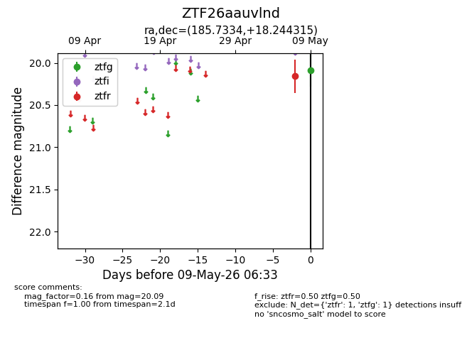
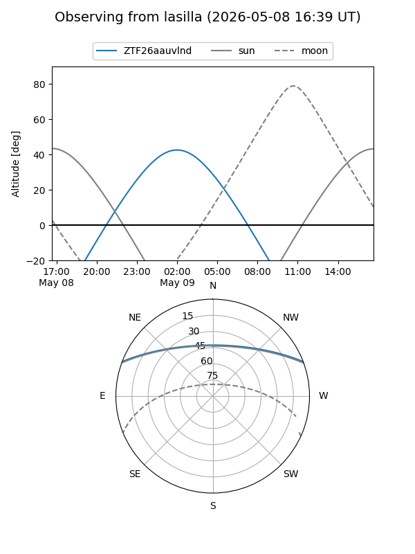
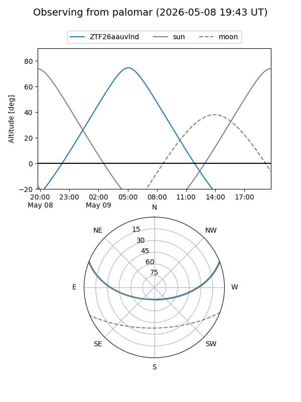

ZTF26aauvlnd
Target ZTF26aauvlnd at 2026-05-09 06:34
Aliases and brokers:
FINK: link
Lasair: link
ALeRCE: link
alt names
ZTF26aauvlnd (ztf,fink_ztf)
Coordinates:
equatorial (ra, dec) = 185.7334,+18.24431
equatorial (HMS+DMS) = 12:22:56.02,+18:14:39.53
galactic (l, b) = (264.9852,+78.95414)
Flags:
Photometry:
last ztfg=20.09, ztfr=20.16
1 ztfg, 1 ztfr detections
Lightcurve

Visibility


Additional plots